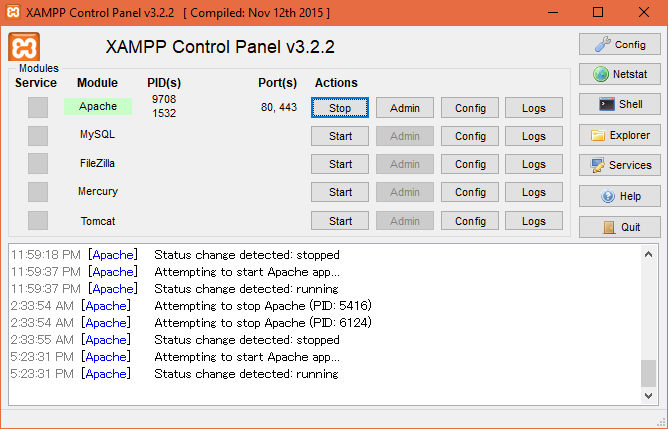

COSC 304 - Setup XAMPP Web Server and Add Microsoft SQL Driver
While there are advantages to developing locally, it is likely more time efficient to use the cosc304.ok.ubc.ca web server. If you choose your own local server, one advantage you will get, is better debug information, as the cosc304 server is setup as a production web server; if the page has a critical error, the school server will just respond with a 500 error instead of showing the page.
Note that Microsoft has provided instructions on how to setup PHP 7 and Microsoft SQL Server.
- Download and install XAMPP from: https://www.apachefriends.org/. Take note of where it is installed too; you will need to access this location.
- Download and install Microsoft SQL Server ODBC Drivers from: https://www.microsoft.com/en-us/download/details.aspx?id=53339.
- Download PHP SQLSRV Plugin from: https://github.com/Microsoft/msphpsql/releases/. After downloading, extract to <XAMPP Install Directory>\php\ext\ The default location on Windows would be C:\xampp\php\ext\. After extracting, head one directory up, to the php folder. Open php.ini in a text editor, locate the text extention=, around aproximately line 915.
Add the following at the end of the Extensions:
extension=php_sqlsrv_72_ts.dll
extension=php_pdo_sqlsrv_72_ts.dll
- Start XAMPP Control Panel
- Press Start next to Apache

Note: If you are using an OS other than Windows, your control panel will be slightly different.
Still click start next to Apache
The webserver loads pages from <XAMPP Install Directory>\htdocs\.
MySQL drivers are already fully configured in XAMPP, and if you want to use the local MySQL server it supplies when developing your final project, the user account is root with no password.
 Home
Home